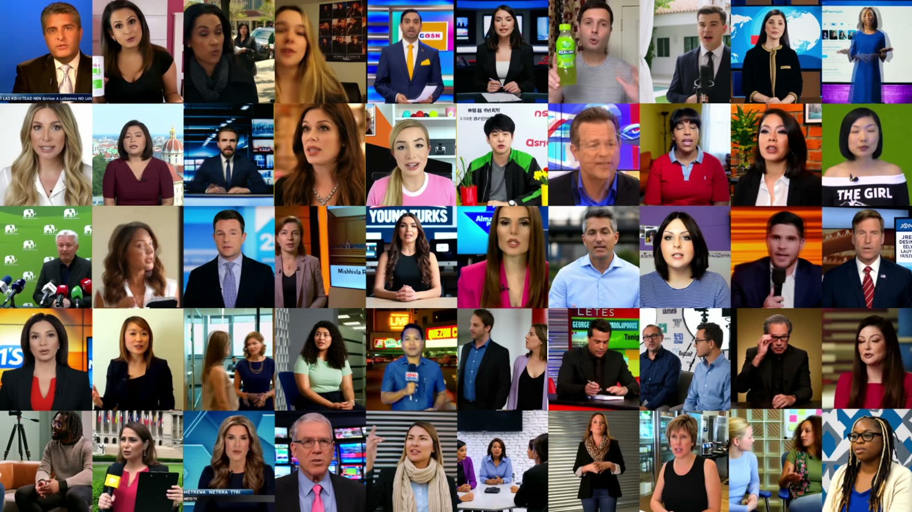

SynthForensics v1.1
We are working on the next release, which adds videos from two more generators.
- Wan2.2
- MiniMax H3
NeurIPS 2026 · Evaluations & Datasets Track
Benchmarking and Evaluating
People-Centric Synthetic Video Deepfakes
None of these people exist.
Every face on this wall was generated by an open-source video model. SynthForensics collects 20,445 of them, each paired with the real video it was described from.
NeurIPS 2026 · Evaluations & Datasets Track
1iCTLab s.r.l. · 2University of Catania · *Equal contribution
Modern T2V/I2V generators synthesize people increasingly hard to distinguish from authentic footage, while current evaluation suites lag: legacy benchmarks target manipulation-based forgeries, and recent synthetic-video benchmarks prioritize scale over realistic human depiction. We introduce SynthForensics, a people-centric benchmark of 20,445 videos from 8 T2V and 7 I2V open-source generators, paired-source from FF++/DFD reals, two-stage human-validated, in four compression versions with full metadata. In our paired-comparison human study, raters prefer SynthForensics in 71–77% of head-to-head comparisons against each of nine existing synthetic-video benchmarks, while facial-quality metrics fall within the FF++/DFD baseline range. Across 15 detectors and three protocols, face-based methods drop 13–55 AUC points (mean 27) from FF++ to SynthForensics and a further 23 under aggressive compression; fine-tuning closes the gap at a backward cost on legacy benchmarks; re-training shows synthetic and manipulation features largely disjoint for most detectors. We release dataset, pipeline, and code.
We are working on the next release, which adds videos from two more generators.
1,363 pristine clips from FaceForensics++ and DeepFake Detection anchor the benchmark and fix its train, val and test splits.
VideoLLaMA 3 writes a structured caption. Annotators and an LLM screen it field by field before it is used.
The same caption becomes the prompt for 8 text-to-video generators. Seven image-to-video models also start from a reference frame.
Scene, subject and action stay fixed, so a detector has to learn generation artifacts instead of content.
How the benchmark was built
Seven steps. Keep scrolling: each one comes at you from the horizon.
Pristine clips from two established benchmarks. Their official split carries over to every synthetic twin.
A vision-language model writes a structured caption. Annotators also pick a reference frame for image-to-video.
Human review first, then an LLM screen for sensitive content. Anything flagged is rewritten until both pass.
The caption becomes a prompt for 8 text-to-video generators; 7 image-to-video models also animate the reference frame.
Five annotators review every video. If any of them rejects it, the prompt is edited or the parameters are tuned and the video is generated again, until all five pass it.
5 annotators
…the man is seated, speaking with natural mouth movements into a microphone…
seed 1407121513 1407121514guidance 3.0 3.5
Regenerated until all five annotators pass it
Each accepted video ships raw, lossless and at two compression levels, to test robustness in the wild.
Every video comes with its prompts, seeds, parameters and environment, ready for training and evaluation.

Architecturally distinct models from 1.3B to 24B parameters, each pinned to the exact commit used for generation. Seven run in both text-to-video and image-to-video mode.
14B
T2VI2Vcommit 325cfd45B
T2VI2Vcommit 5ab1e2414B
T2VI2Vcommit 0790f8924B · distilled
T2VI2Vcommit e7eeccf1.3B
T2Vcommit eb36b5622B
T2VI2Vcommit 9e8a28e15B · distilled
T2VI2Vcommit f9764ce14B · distilled
T2VI2Vcommit 5cb7ce9A paired-comparison study against nine existing synthetic-video benchmarks, with 118 retained participants and 4,121 ratings per question.
of head-to-head comparisons prefer SynthForensics on overall quality
prefer it on realism
of SynthForensics clips were flagged as fake, against 84.1% for existing benchmarks
Landmark completeness tracks the real FF++/DFD curves across FAN thresholds, while nine existing synthetic benchmarks fall well below.
Mean TOPIQ-NR-Face falls within the FF++/DFD real-video range, and SynthForensics is the closest benchmark to FF++ in 1-D Wasserstein distance.
15 face-based and synthetic-video detectors under three protocols. Each row pairs a detector's AUC on legacy data with its AUC on SynthForensics.
* Frame-level detector.
These are the headline numbers. For the full results of every detector, protocol and compression level, read the paper →
Two subsets, T2V and I2V, each in four compression versions, with per-video metadata, dense captions of the sources and official splits that follow FF++.
{
"generator": "LTX-2.3",
"mode": "i2v",
"text_encoder": "gemma-3-12b",
"prompt": "A man in traditional white attire sitting
and speaking, likely in a news studio setting. [...]",
"seed": 1364115978,
"width": 1536, "height": 1024,
"num_frames": 121, "frame_rate": 24,
"num_inference_steps": 30,
"source_caption": "000.json", "source_image": "000.png",
"environment": { "repo_commit": "9e8a28e1…", "gpu_name": "A100 80GB" },
"generation_time_seconds": 264.0
}The benchmark is hosted on Hugging Face. Accept the terms on the dataset page and access is granted automatically.
# accept the terms on the dataset page, then:
hf auth login
hf download SynthForensics/SynthForensics --repo-type dataset --local-dir SynthForensics
# or just the lightly compressed T2V videos
hf download SynthForensics/SynthForensics --repo-type dataset --local-dir SynthForensics \
--include "T2V/videos/crf23/*"Use is limited to non-commercial research and education; cite SynthForensics together with FF++ and DFD, and do not redistribute outside the original repository. Dataset licensed under CC BY-NC 4.0, code under MIT.
* Equal contribution
@misc{leotta2026synthforensicsbenchmarkingevaluatingpeoplecentric,
title = {SynthForensics: Benchmarking and Evaluating People-Centric Synthetic Video Deepfakes},
author = {Roberto Leotta and Salvatore Alfio Sambataro and Claudio Vittorio Ragaglia and
Mirko Casu and Yuri Petralia and Francesco Guarnera and Luca Guarnera and
Sebastiano Battiato},
year = {2026},
eprint = {2602.04939},
archivePrefix = {arXiv},
primaryClass = {cs.CV},
url = {https://arxiv.org/abs/2602.04939}
}